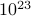
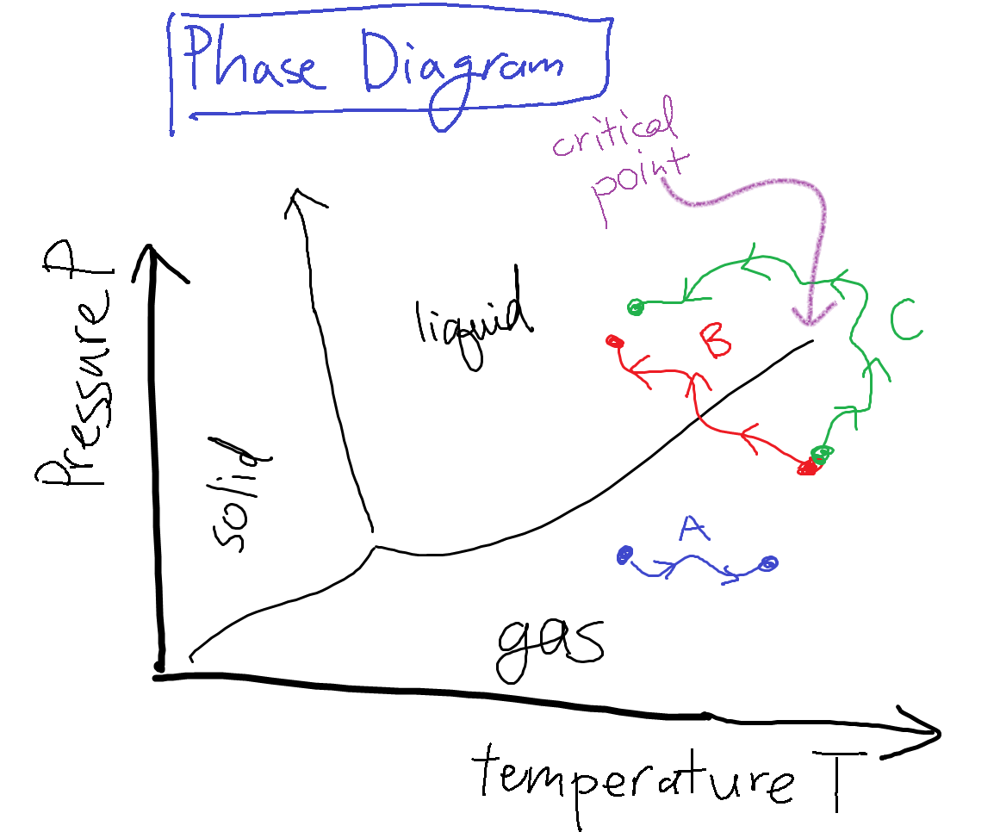
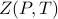

Phase Transitions
Motivation
As we know, statistical mechanics is the study of the macroscopic properties of matter. When we put together lots of microscopic things, the resulting material often has emergent behavior of a completely different nature. Liquids flow, solids are rigid; metals conduct electricity, insulators don't; ferromagnets hold a permanent magnetic dipole moment, paramagnets don't.
In this course, we'll develop the language to describe these emergent properties of matter. These properties result of the interaction of many many degrees of freedom, but since there are so many variables, we have to take a different approach from previous physics classes. If we only had a few particles, it wouldn't be different to write down the classical equations of motion, or the quantum mechanical Hamiltonian, and solve for the behavior of the system. But a cup of water has ~ water molecules, and it would be impossible to understand its behavior by explicitly computing the motion of zillions of molecules. Rather than listing the details of all the microscopic motions, we describe water in terms of thermodynamic variables like its temperature and pressure.
Phase Diagrams and Phase Transitions
Under different conditions, a macroscopic sample of water has qualitatively different properties, which we call different phases of matter. We can imagine an experiment where we had a sample of water, and we could twiddle some knobs controlling the temperature and the pressure of that sample of water. Under some conditions, the water flows around freely as a liquid; under others, it stops flowing and becomes a rigid, crystalline solid; under still other conditions, its density drops a thousandfold and it becomes a compressible gas. When the water changes from one of these phases to another, we call it a phase transion. In this class, we will spend a lot of time thinking about and explaining phase transitions.
All this information on the phases of water can be summarized on a phase diagram such as the one shown below.

Say Alice the experimentalist twiddles the knobs on the water system, and moves the system state along the path A in the diagram. As the control variables of pressure and temperature vary, her system remains in the same liquid phase, and all the macroscopic observables (such as the density) change continuously. On the other hand, if she twiddled the knobs to change the system state along path B, when she crosses the liquid-gas phase transition boundary, the density will change discontinuously to a much lower value.
This behavior is really quite surprising and unusual – even though she is changing the control parameters continuously, there is a discontinuous, sudden change in a macroscopic experimental observable!
Defining phase transition more precisely
We then tried to state this fact more formally. As we learned in the previous statistical mechanics class, the large-scale behavior of any thermodynamic system is captures by the partition function and its derivatives. So in this problem, it's natural to consider the partition function as a function of the control variables by writing  . Then the professor made a baffling claim using some fancy words that I didn't understand:
. Then the professor made a baffling claim using some fancy words that I didn't understand:
Within a phase of matter, the partition function  is an analytic function of its arguments, but along phase boundaries, it experiences ‘‘non-analyticities’’.
I remember from math class that (for real functions), analytic means ‘‘smooth’’, but I had no clue what a non-analyticity was, so I asked the professor. It turns out that he just meant that the partition function experiences sharp, abrupt changes at phase transitions. The word ‘‘non-analyticity’’ encompasses all the fun things we learned about in the first few weeks of calculus class: jump discontinuities, cusps (aka kinks), poles (aka divergences or ‘blowing up’), etc…
So the essence is that the partition function (which, again, encapsulates the system's thermodynamic behavior) typically changes smoothly when you twiddle the knobs, but when you cross a ‘‘phase transition’’, it has some abrupt changes.
The Critical Point
Now if we go back to the phase diagram and look the liquid-gas boundary, we notice that something funny happens at the end – the line peters out and disappears past a ‘critical point’. That is, liquid and gas become the same phase on the right side of the boundary. So if you follow path C, and you ‘‘go around’’ the boundary between liquid and gas, you actually never encounter the liquid-gas phase transition, and the density smoothly decreases between the start and end point. How bizarre!
This point on the phase diagram is known as the critical point. We'll spend lots of time in class discussing the interesting things that happen near critical points. In fact, a different type of phase transition occurs at a critical point, called a ‘‘higher-order transition’’ or ‘‘continuous transition.’’ This sort of phase transition is different than the one that happens across the liquid-gas phase boundary.
Classifying phase transitions
There's two types of phase transitions: first-order or higher-order. In this class we'll focus on the second type of phase transition.
A first-order transition is exemplified by the liquid-gas phase transition. It involves a discontinuous change in some macroscopic quantity such as the density. As the transition occurs, both phases can coexist, and they separate into little dropleets or puddles.
A higher-order transition or a continuous transition is exemplified by the critical point that we just discussed. In contrast to the first-order transition, there is just one homogenous phase during the transition. (I was honestly a bit confused at this point, but I guess it'll make more sense later).
Next we started talking about symmetry.